“2016年是电动车行业艰难的一年。”——绿源浙江金华经销商庄晨明在绿源500强经销商2016峰会上，对2016年的总结。一行业持续下滑，绿源逆势上扬经历了近20%产业滑坡的2015年后，2016年电动车行业同样不容乐观。市场趋于饱和；顾客不活跃；新国标未出台；各地政府严打；整体销量下滑。预计 2016 较去年同行业整体销量下滑10%-15%。绿源电动车却从市场萎缩、激烈价格战、多数企业经营疲惫的情况下，逆势上扬，销量同比增长10%。并且持续迸发活力！
二建立合作，迎接挑战绿源电动车成立于1997年，是目前全国上千个电动车品牌中历史最悠久的企业之一，是中国电动车产业的创始者，电动车行业标准的推动者，电动车产业进步的引领者，是目前中国乃至世界最大的电动自行车研发、制造、销售和服务的企业之一。发展 19年，绿源已拥有 7大制造基地；数千名员工；253项自助专利，掌握电动车制造研发核心技术；全国布局超过7000个网点，超千万用户正在使用绿源电动车。毫无疑问，这是一家成功的、成熟的，已经站在行业巅峰的大型企业。
2015年，华与华有幸成为绿源电动车的品牌战略合作伙伴。绿源项目组在接到这个项目时倍感压力，电动车行业对于华与华来说，更是一个全新的行业和领域。那么，如何让一家优秀的大型企业，变得更加优秀，乃至更加伟大，这是一项巨大的挑战。
三超级战略助力绿源站在发展最坚实的基石上制定企业战略，有两个基础要素，一个是资源禀赋，一个是能力基因。基于华与华的超级工具——三维坐标系，绿源项目深入研究了电动车行业发展历史，在进行了消费者调研及企业调研后，抓住本质，回归常识，发挥本能，终于找到了答案。
1.发现社会问题。
电动车解决了国民短途代步的问题， 但同时也带来了安全问题。
电动车目前在中国经过20年的发展，保有量已超过2亿辆。因为电动车便民、环保、经济，解决了国民短途代步的社会问题。但是与此同时，电动车也带来了严重的社会问题——电动车事故屡屡发生！
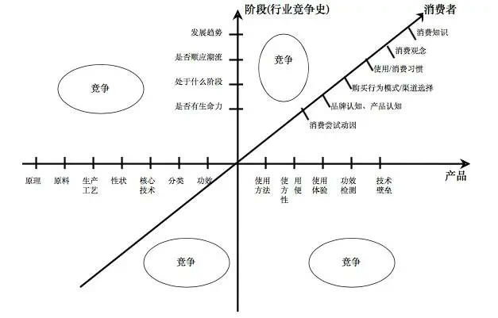
2.探究行业现状。电动车行业安全管理无力，各地政府日益重视电动车安全。与电动行业发展形成鲜明对比的是，电动车行业安全管理却相对无力和虚弱，电动车引发的事故屡屡发生，解决这一难题正在成为社会需求。国家日益重视电动车安全问题。近年来，各地政府陆续出台政策法规来规范电动车的使用。
3. 挖掘消费者本质需求。安全是每个人最基本的需求，安全的价值永不消亡。安全如同空气和水一样，是每个消费者最基本的需求，具有普世价值。只要人类存在，对安全的需求也永远存在，安全的价值永不消亡。
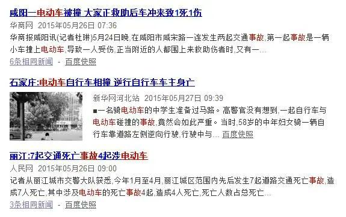
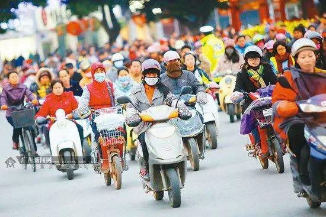
4. 企业寻宝，锁定安全。安全是绿源19年来积累的资源禀赋与能力基因。安全的种子在绿源成立伊始，就深根于绿源领导人的心中。当时电动车技术发展还不成熟，一位消费者在骑车过程中摔了一跤，然后打电话到绿源询问原因。绿源总裁胡继红女士知道后，非常重视，立刻展开调查，整整3天，5个工作人员夜以继日一起参与改进测试，发现是前泥板的问题，最终通过改进测试，排除安全隐患，提升安全性能。绿源19年来积累了众多安全资源，也围绕安全研发了几十项年技术与专利。
绿源董事长倪捷先生多次参与行业标准制定、并且为行业发言。
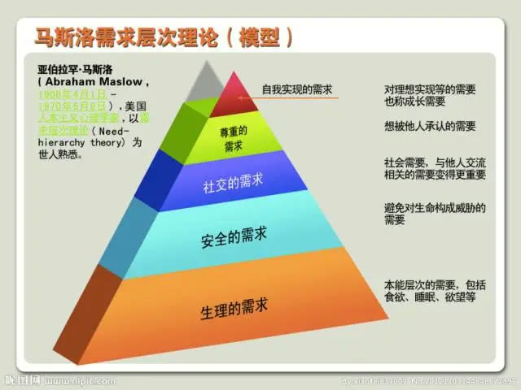
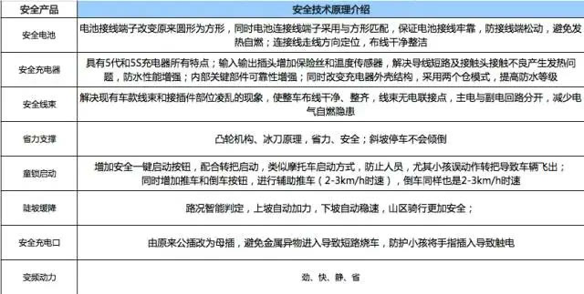
倪董还亲自撰写发布了《电动自行车快速发展对交通安全的影响研究》白皮书，深入研究了电动车的安全问题。
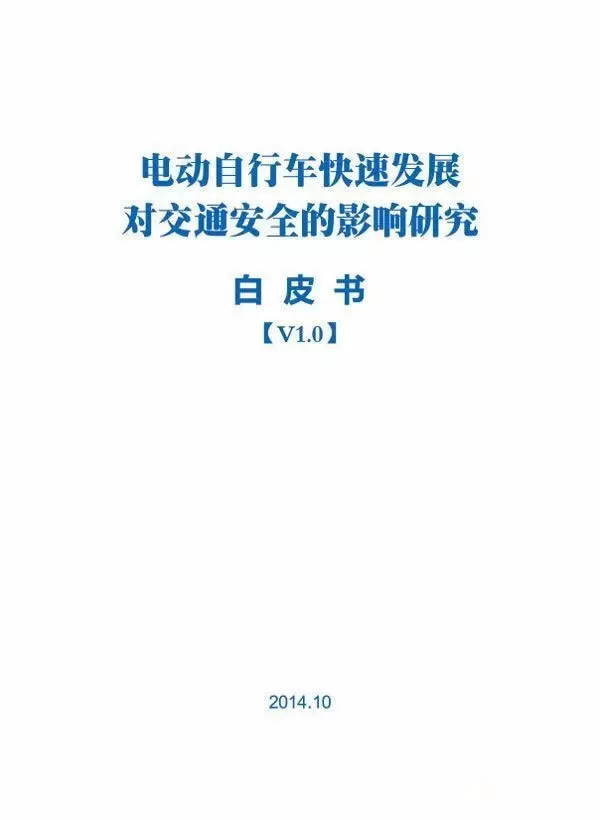
5.华与华和绿源共同制定安全战略。企业的本质是为社会解决问题。任何企业得以生存，都是因为它满足了社会某一方面的需要，实现了某种特殊的社会目的。所以企业的战略，是企业为解决该社会问题而制定的战略。企业制造的产品和服务，是组成解决社会问题有效的、全面的、可持续的方案。
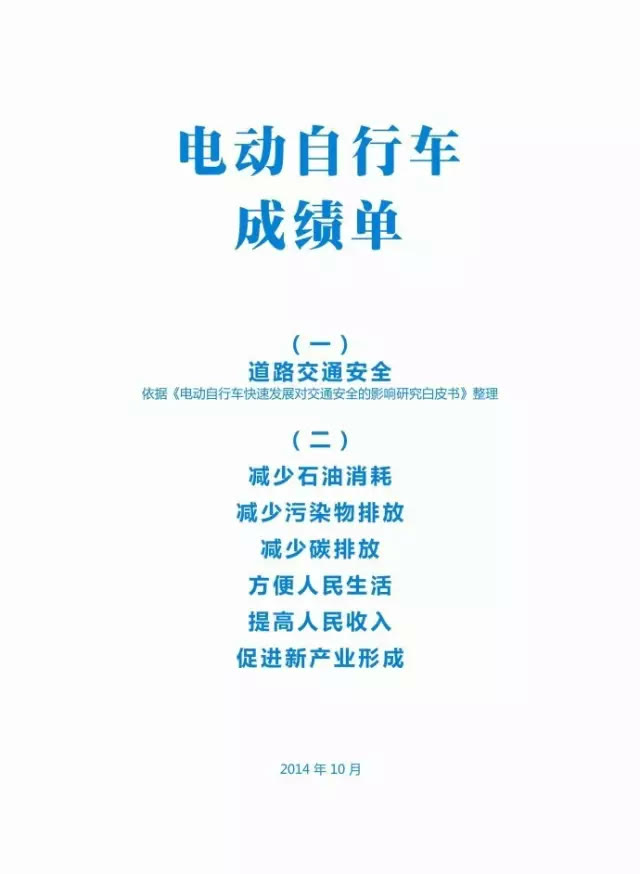
华与华与绿源一同明确了“解决电动车安全问题”的企业使命，制定安全战略，即以安全为核心，涵盖安全产品、安全终端、安全中心、安全大会四大板块，为全社会提供人、电动车、交通环境三位一体的安全解决方案。并以“绿源安全万里行”为主题，致力于全国范围的安全理念和安全知识的普及和推广。
安全产品。绿源生产的每一辆电动车都要保障消费者的安全，同时也是智慧的、时尚的、好用的。提供更多安全配件，最大程度来保障骑行者安全。并且绿源提供的服务，对消费者的态度，不仅是体贴友善、专业敬业，更是以消费者的安全为核心。安全终端。
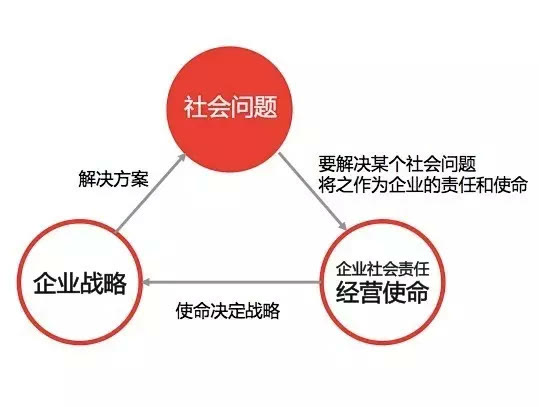
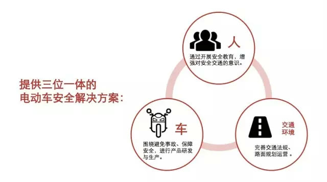
打造一个卖货的安全终端。绿源从销售环境、动线、终端媒体化、装修安全等多个方面做了整改和提升。终端将作为窗口，向消费者传播安全理念。比如在购车时，还将专门赠送安全头盔和第三责任险，从而减少人身安全和财产损失。安全中心。安全中心将集安全技术研发、电动车安全检测、安全生产以及电动车事故调查为一体。针对电动车安全问题进行数据化、技术化的分析与解决，反馈指导生产。不断研发出更安全的电动车技术、打造与安全相关的核心卖点。安全大会。召开“绿源安全万里行”电动车安全大会，发布最新的安全产品、安全技术、事故调查分析报告等，倡导行业内安全公益事件。安全大会也将成为绿源的社会服务产品。以“绿源安全万里行”的主题，在全国范围内发起的绿源安全万里行安全点检查活动，以切实行动为每一位用户进行电动车安全检查与保养，最大程度保障用户真正实现“出入平安”。
四超级符号、超级话语引爆超级战略1. 一个伟大的品牌就是一个伟大的超级符号。如何占领安全？用超级符号！超级符号是人人都看的懂的符号，是人人都按照它指引行事的符号。它可以轻易地改变消费者的品牌偏好，也可以在短时间内发动大规模的购买，还可以让一个新品牌在一夜之间成为亿万消费者的老朋友。华与华为绿源创作了一目了然、一见如故的超级符号——绿源安全之盾。
绿源安全之盾，由盾牌、绿色和黑白格组成。盾牌符号蕴含着安全的文化原力，千百年来深深根植与消费者的心智中，能够让消费者不思而得联想到安全；
绿色是绿源的品牌色。
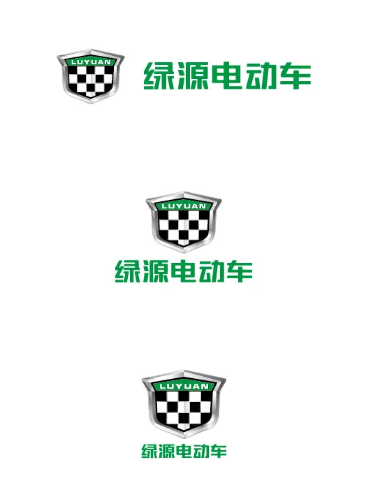
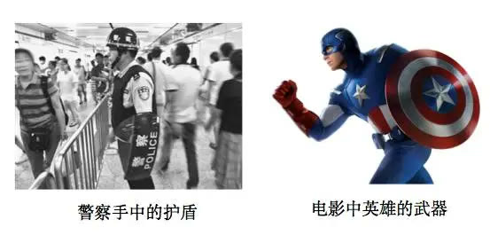
花边符号黑白格是消费者熟知的F1赛车的代表符号，能够天然的将消费者对F1顶级赛车的喜爱嫁接到绿源品牌上。
盾牌、绿色、黑白格三者结合起来，共同塑造出“绿源电动车”的安全形象。2. 打造流传百年的口号，打造屹立百年的品牌。超级话语就是用口语化的方法，围绕超级词语，造一个能说出价值，说动消费者大规模购买和能够轻易传播的话语。超级话语要一目了然，一见如故，要能让人行动。打动消费者。安全是一家人的事绿源安全型电动车不惜工本，为您安全我要安全，把钢材加厚30%全家一致选绿源绿源安全万里行
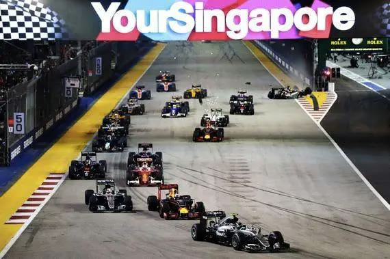
能够广泛的应用在所有传播场景中，持续为绿源积累品牌资产，并且保证绿源品牌在对外传播上的一致性和整体性。
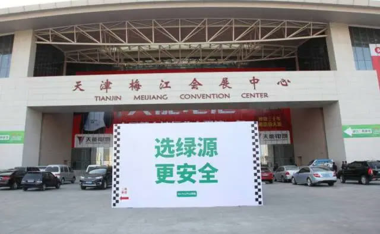
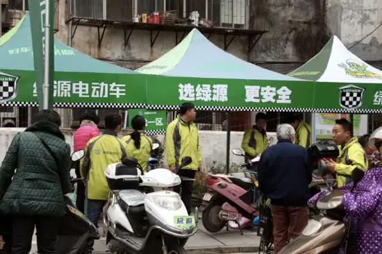
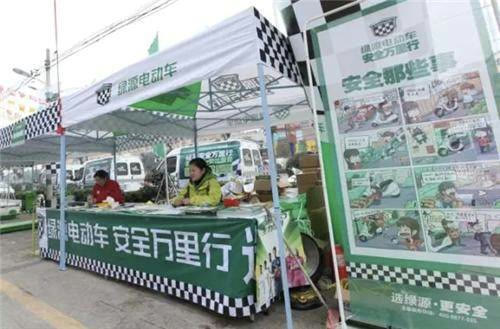
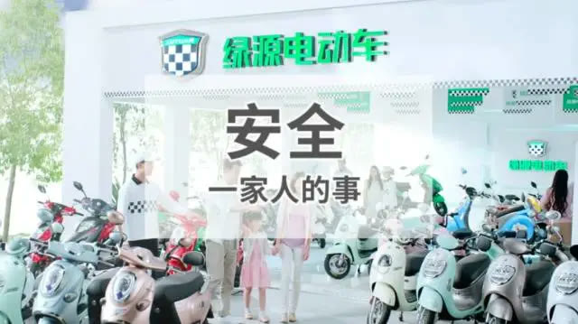
五超级传播引爆市场：全面媒体化，让符号遍地开花我们说全面媒体化，如何执行？就是没有媒体广告预算，就把产品、包装、渠道、终端全面媒体化；有媒体广告预算，也要把产品、包装、渠道、终端全面媒体化。1. 绿源在全国范围内有近5000家门店，门店本身就是最大的广告媒体。电动车门店往往开在电动车一条街或者电动车市场中。这样的环境往往是信息嘈杂、各家品牌挖空心思“争奇斗艳”的，该如何让消费者第一眼就发现绿源？愿意走进绿源？门头就要创造发现感和价值感！绿源在门头下方放上了绿源的花边符号——黑白格，黑白格是重复图形，能够强制抓住人的眼球。在电动车一条街上，绿源的门头就立刻能被消费者看到。同时，门头上绿源的超级符号——绿源安全之盾也一目了然的向消费者传递绿源电动车的安全价值,吸引消费者进店。
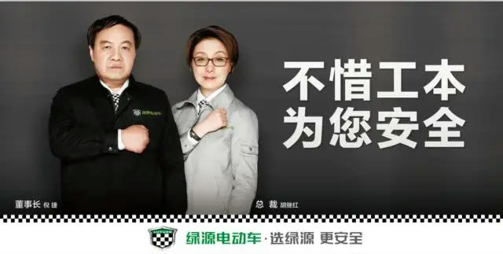
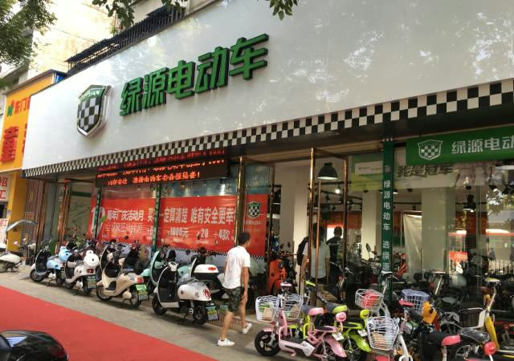
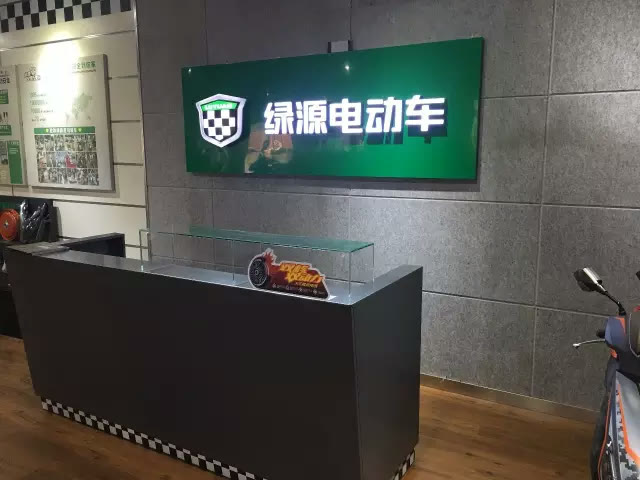
2. 通过产品，让超级符号与消费者建立联系。华与华提出绿源的超级符号——安全之盾后，绿源的总裁胡继红女士非常重视，亲自率领集团精英，找遍全国的供应商，寻遍十几种工艺，打样了几十个材质的版本，最终找到了完美的材质，并经过精心打造最终做出了汽车级品质的车标。营销内容会过时，产品会更新换代，只有符号体系是永恒的。今天绿源的每一辆产品上都有绿源的超级符号——安全之盾。绿源通过不断出产的高质量产品，让安全之盾能和消费者见面，并且建立联系，建立信任，持续为绿源积累品牌资产。未来，这个超级符号安全之盾就能够为绿源创造超级销售力,消费者看到绿源安全之盾就喜欢它、信任它、愿意买，能够销售一切产品。
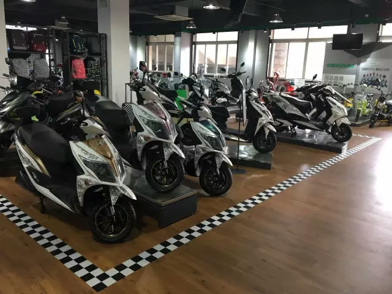
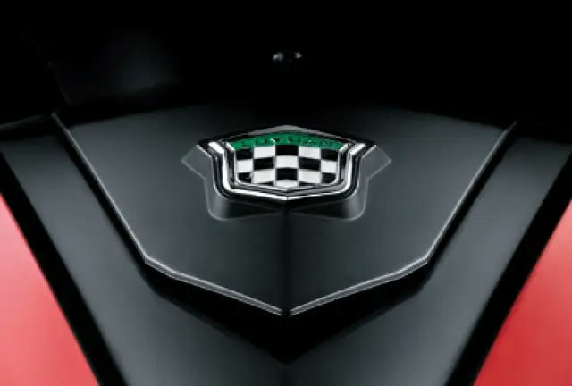
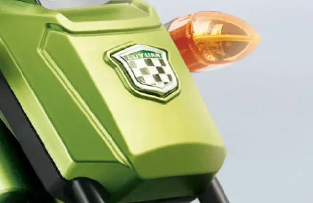
超级符号提出以后，绿源以超高效率、超高质量的执行力，不到半年，迅速在企业、工厂、产品以及全国的终端全面铺开使用，让超级符号全国范围遍地开花！
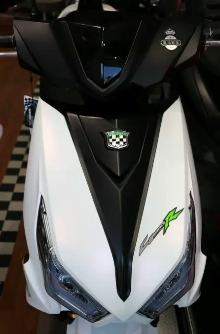
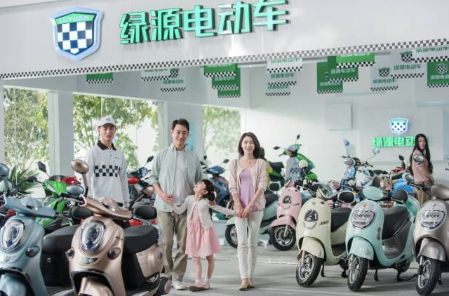
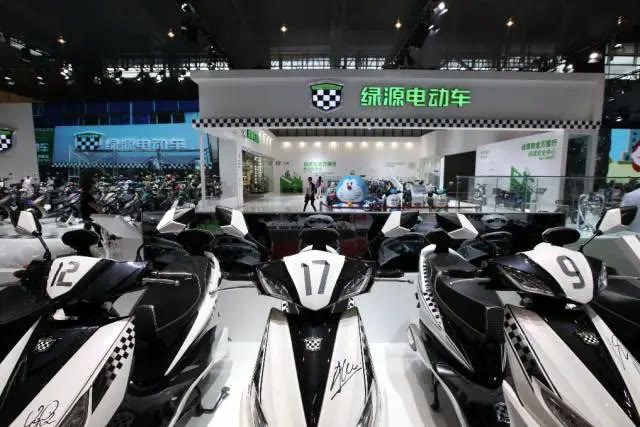
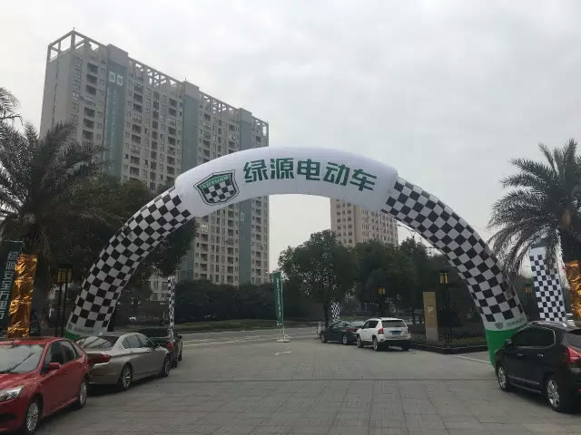
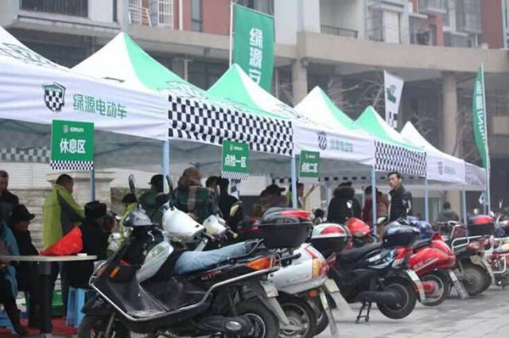
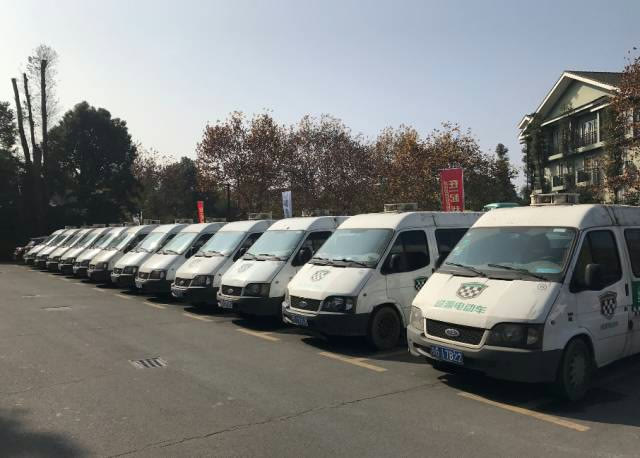
六重塑产品开发思路、打造超级爆品电动车产品能够满足消费者短途代步的需求。在10多年前电动车刚出现时，这一点就足以让消费者掏钱购买。但电动车行业发展至今，市场产品同质化严重，消费者往往是二次购买。购买不再是因为需求，而是被购买理由打动。产品的本质就是购买理由，开发产品就是先有推广创意，后有产品开发。先创意购买理由，把购买理由写下来，交给技术人员去实现产品。
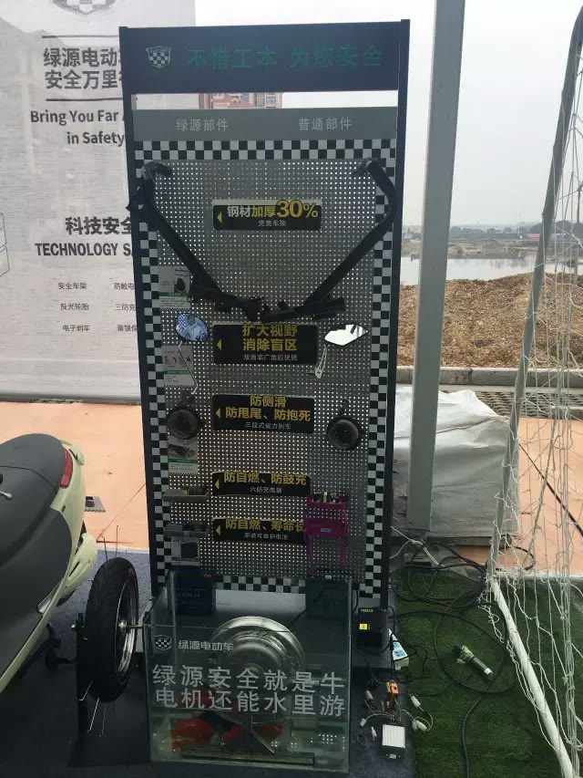
华与华为企业产品开发路径图：
华与华为绿源提出6步产品开发法，并为绿源创意开发了超级载物王、国民保姆车和绿源一路发等产品。
绿源超级载物王产品开发案例：第一步、寄生于消费者运货载物的生活场景中发现存在的安全问题：（1）货物掉落造成财产损失（2）货物掉落地面引起交通隐患
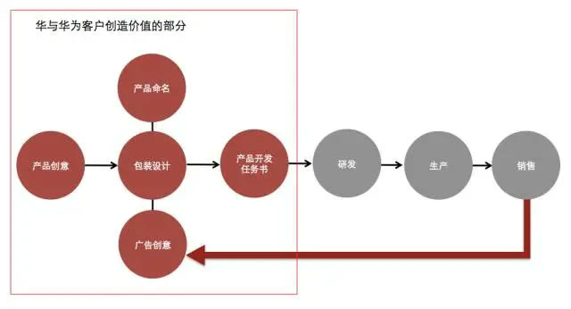
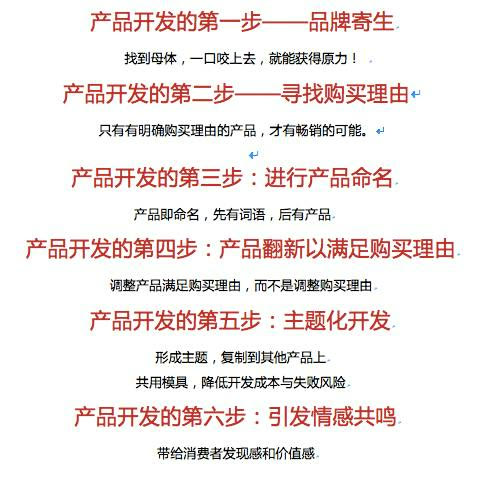
（3）本身超重造成骑行安全隐患
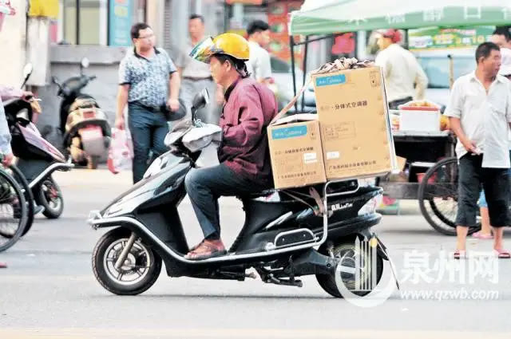
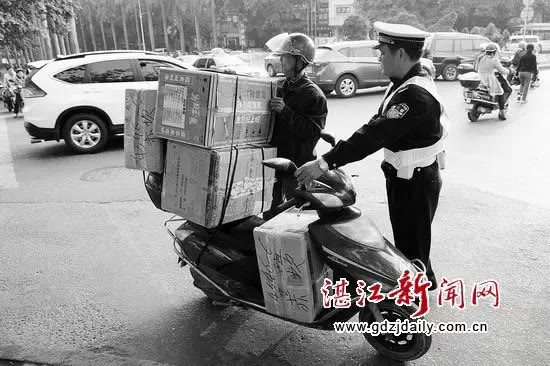
第二步、确定购买理由。以保障载物安全为基础，做一辆安全的、载物功能做到极致的车，超能跑、超能装。第三步、命名为超级载物王。第四步、围绕超能装、超能跑的购买理由。选择现有产品HWW，进行细节翻新，满足购买理由。比如，我们将现有挂钩曾加高度增加弯折，让挂钩能挂更多，同时在颠簸的路面上也能不易跳脱。第五步、将产品翻新细节，复制到多辆载物车型上，形成载物主题系列。第六步、推广海报画面加入场景感，唤醒记忆，引发情感共鸣。
在绿源与华与华的共同努力下，绿源整合营销和产品研发部门，打破部门墙。重塑绿源研发部门思路：由制造“好用的产品”升级为“制造好用又好卖的产品”。绿源总裁胡继红女士更是亲自挂帅，主抓产品开发，旨在生产更安全、更好用、更时尚、更智能的产品。
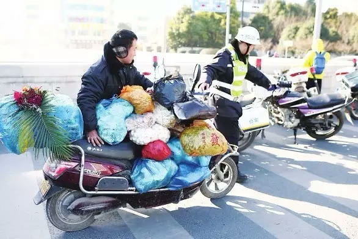
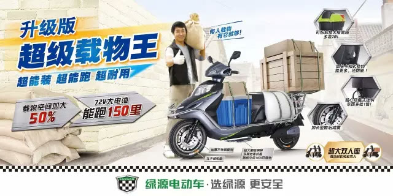
七从企业到门店，全员清扫，扫出安全，扫出销量“我认为华与华在2016年为绿源创造的所有价值中，最大的是提出清扫。可能连他们自己都没有想到，清扫门店给我带来巨大的震撼，率先垂范、亲力亲为，用清扫改变绿源，让绿源的产品更安全！”——绿源总裁胡继红女士于绿源500强经销商2016峰会发言。清扫是人人都知道、人人都会做、人人都能做的事情。是最简单却也往往最容易被人忽视的方法。华与华的清扫提案，可谓是由行动触发行动，由行动引发创意！1. 行动触发行动。在2016年7月18日，华与华每周一全公司清扫中，华杉董事长率先垂范，亲自把绿源样品车前前后后，从里到外擦的干干净净。在华杉董事长的带动下，绿源项目组和公司的志愿者一行人，在当月27日，顶着39℃的高温，来到上海市一家绿源门店进行了近3个小时的门店清扫。
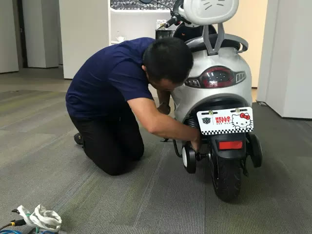
2. 行动引发创意。清扫后，不仅门店焕然一新，绿源项目组也针对清扫行动，进行了方方面面的总结，得到了巨大的收获。（1）清扫能够让门店始终保持干净亮丽，能够进一步提升门店形象，提升顾客进店体验。（2）每天擦车、保养车辆外观，可以让产品永远保持出场时的状态，提升产品卖相，让产品更好卖。（3）全员清扫能够让店员活跃起来，营造门店工作气氛。（4）擦车、清扫过程中，能让店员加深对产品的了解和认同，让店员与门店建立更深刻的感情。（5）擦车过程中对产品细节会更加了解，再向消费者介绍产品时，也更有信心和感染力。（6）清扫过程中整个门店都处于活跃状态，能够吸引消费者注意和进店。3.总裁率先垂范，带领全员扫出安全、扫出销量！打扫结束后，华与华立即向绿源提案，提议所有绿源门店进行清扫行动，并且由绿源总裁胡继红女士率先垂范，亲自带着大家清扫门店，通过清扫，打造远远领先行业的超级门店！胡总当即表示清扫是非常有价值的事，第二天起绿源从总裁办开始进行清扫。工欲善其事必先利其器，胡总更是亲自率领团队研究清扫工具与清扫方法。
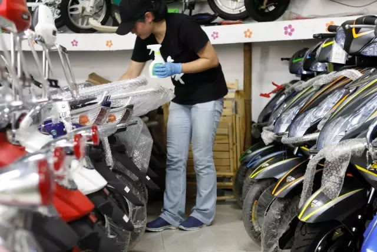
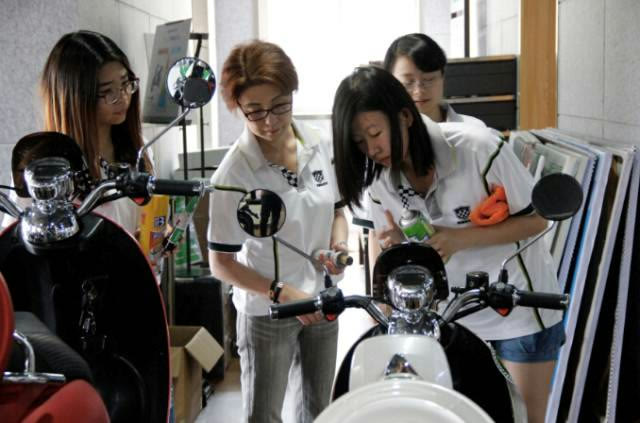
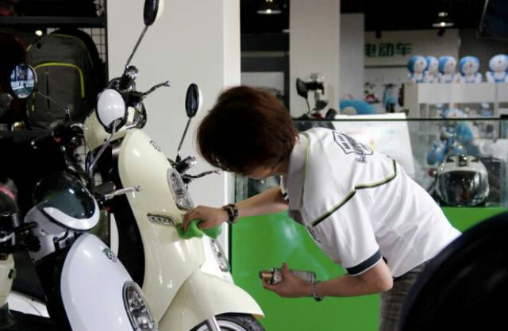
现在，绿源的办公楼、生产工厂、终端门店，每天都会进行清扫活动，从清扫中改善环境、排除安全隐患、获得改进灵感、持续优化产品、提升消费者进店体验！
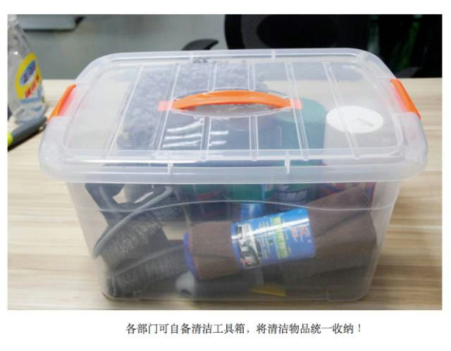
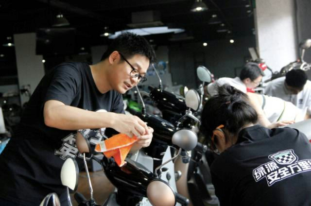
八工匠精神、日日不断、永续经营无论经济如何发展、行业增长下滑，无论互联网发展、下一个风口在哪里。绿源将始终以“解决电动车安全问题”为企业使命，为社会提供电动车安全问题解决方案。安全战略让绿源站在生存发展最坚实的基石上。绿源将始终以工匠精神持续制造更安全、更时尚、更智能、更好用的产品。超级符号也将发挥超级销售力，帮助绿源卖更多的产品。绿源将始终日日不断、持续改善，打造更安全、更舒适的安全终端。全面媒体化将为绿源提高传播效率、降低传播成本。
九绿源案例超级之处1. 一战而定。首先，是一战而定，这就是华与华方法，用超级创意撬动企业战略。绿源安全之盾的形象为绿源奠定了决定性的竞争优势，在行业下滑30%的形势之下，绿源销量连续两年保持健康增长！并且绿源安全之盾的形象，成为绿源每天增值的品牌资产。
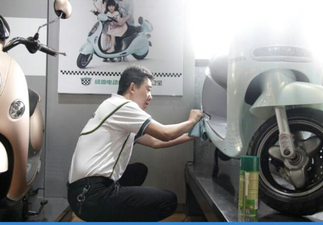
牌，除了本身品牌的利益点之外，都要说到安全；消费者购买电动车时，安全也成了一个重要的选择标准！2. 持续服务。提供持续服务的价值：从产品开发创意、包装设计、广告与推广创意，到企业战略、品牌战略、品牌资产管理。全面体现华与华企业战略、产品开发、广告创意三位一体的超级服务！3.积累品牌资产，管用100年。一个品牌最核心的是要有品牌的符合咒，这是最大的传播力。绿源的超级符号“绿源安全之盾”和超级话语“选绿源更安全”为绿源打造了品牌储钱罐，从绿源的每一辆产品用上绿源安全之盾的车标，绿源的每个门头用上安全之盾和黑白格，每一份物料上印上“选绿源，更安全”的一刻开始，每一次都是积累。100年后，无论营销会是什么形式，产品发展成什么样子，只要带上“绿源安全之盾”的产品就好卖，听到“绿源”就想到安全。这就是超级符号和超级话语所带来的永恒的资产回报！